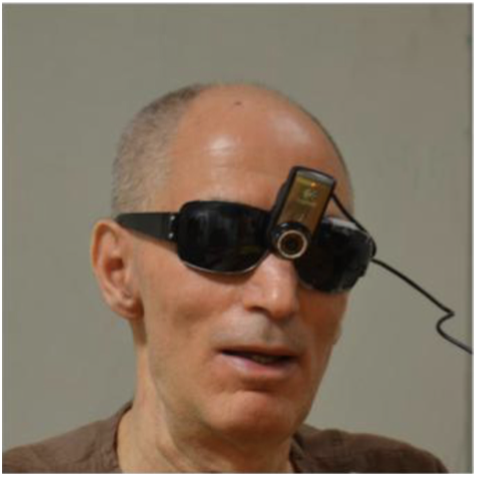

Sensors

Source: https://ieeexplore-ieee-org.proxylib.csueastbay.edu/document/6739993
The sensors used include a camera for capturing clothing images, as well as a microphone for speech command input and any audio output device, such as speakers or earbuds. Some systems [1][2] use a Logitech web camera with auto focus feature to capture the clothing images. This camera is mounted on a pair of sunglasses so that the blind user may hold the clothes in front of them to be recognized. Another system [3] solely incorporates a microphone for speech command input for questions about an existing image of a clothing item and its attributes. The audio output used in the first system is Microsoft Speech Software Development Kit, which has numerous configuration options that can be set according to user preference. These include speech rate, volume, and voice gender.